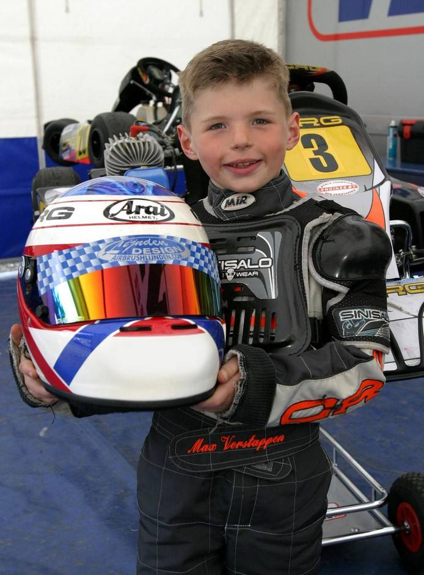

Eneas me la pela!!!! y estoy intentando hacer una pagina web para el proyecto de base de datos.
--HISTORIA DE MAX VERSTAPPEN--
Verstappen nació para ir rápido. Hijo del excorredor de Fórmula Uno Jos Verstappen, su madre Sophie también compitió en karts con éxito. Nació en Hasselt (Bélgica) en 1997, y muy pronto empezó a competir, corriendo regularmente en karts en Genk (Bélgica) en 2003. En 2005 las cosas se pusieron más serias, y compitió en su primer campeonato: el Campeonato de Bélgica Mini (VAS), en el que ganó las 21 carreras. En 2013 Max ya lo había ganado todo en el mundo del kart, incluido el Campeonato del Mundo KZ en Varennes-sur-Allier (Francia). Su debut al volante de un monoplaza se produjo en las Florida Winter Series, pero muy pronto fue fichado por Van Amersfoort para correr en el Campeonato Europeo FIA de Fórmula 3. Con tan solo 16 años Max dominó el campeonato, ganando la sexta carrera antes de adjudicarse seis victorias consecutivas en las series y acabando en el tercer lugar de la clasificación general. En agosto de 2014, se unió a la Red Bull Junior Team, desestimando una oferta de Mercedes para unirse a su programa de desarrollo de pilotos. Seis días más tarde, fue confirmado como uno de los pilotos de la Scuderia Toro Rosso para 2015, junto con Carlos Sainz Jr. y en sustitución de Jean-Éric Vergne. A los diecisiete años y ciento sesenta y cuatro días de edad, Max se convirtió en el piloto más joven en iniciar una carrera del Campeonato del Mundo, superando el récord de Jaime Alguersuari por casi dos años.